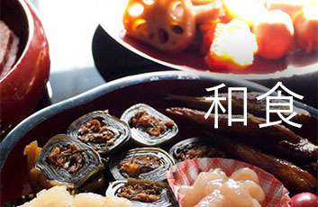
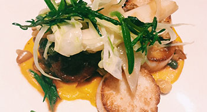

今だから見直したい「和食」  普段、私たちが何気なく口にしている和食ですが、その基本は一汁三菜。ご飯、味噌汁、お漬物の他、主菜(魚またはお肉) 、副菜として季節毎の野菜と豆類で構成されます。 昔から「旬の野菜を食べましょう」と言いますが、それは素材がじっくりと時間をかけて蓄積してきた旨みや栄養価が最高にな ったところでいただいて、効率よく栄養を取り風邪などの予防をしましょうね、ということです。それでは各季節毎の旬の野菜について調べてみましょう。 続きを読む >
簡単！おすすめレシピ  季節の食材〜春〜 新タマネギに春キャベツ、新じゃが、山菜などなど・・・春の野菜は風味がよくみずみずしいのが特長です。それでは春野菜を使ったレシピを紹介しましょう。 続きを読む > 春野菜を食べて花粉症対策！？ 春になると花粉症に悩まされる人は多いとおもいます。この花粉症、ある食材を摂ることで少し緩和されるんです！さてその食材とは・・・！？ 続きを読む >